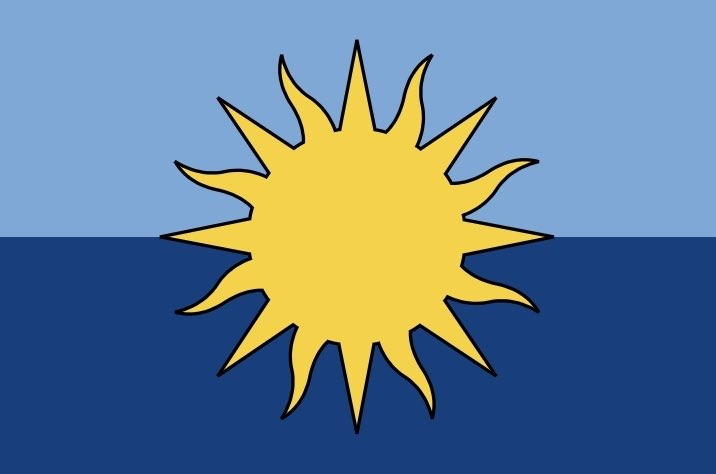

CTSEA
Welcome to the CTSEA (Kingdom of the Commonwealth of Terlyle and South East Asia, CTS) webpage!
The CTSEA is a nation on the Rulercraft Minecraft Server (website: Rulercraft) in around the Indonesia area. It was first founded May 20th, 2023 and refounded April 16th, 2024. It is currently led by .BananaPie9 of Terlyle with Lt. Governor being KneecapBananas of Amagoa. There are currently 7 towns within the Commonwealth, including Irgunlia, Terlyle, Towny_Town, Duckopolis, Amagoa, Shinano, and Timor. It has 11 residents within.
